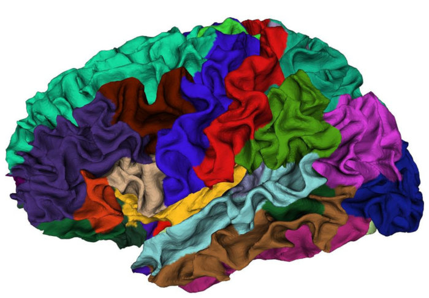
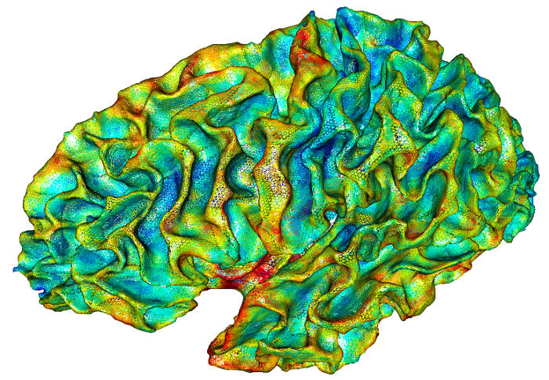
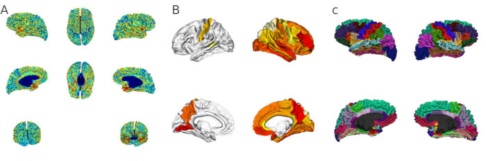
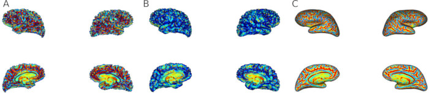
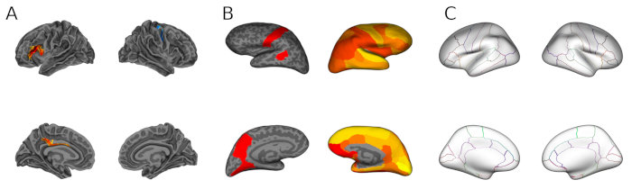
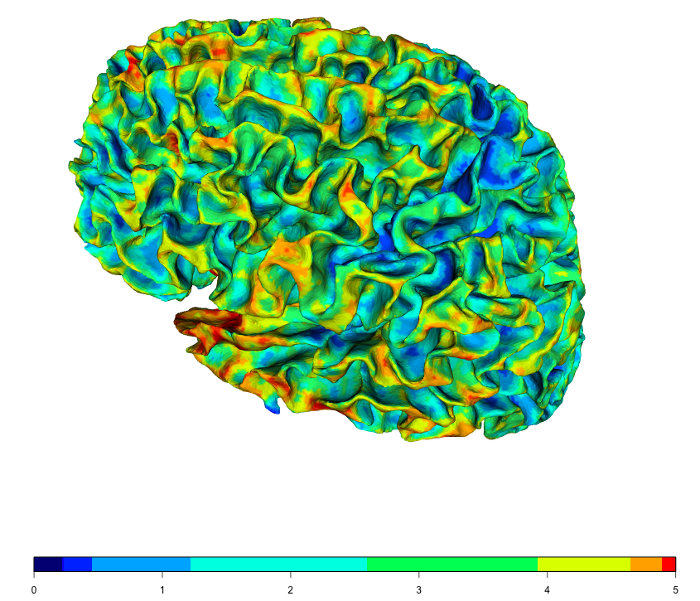
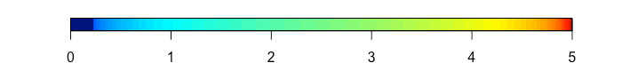

fsbrain: Managing and Visualizing Structural Neuroimaging Data in GNU R
Source:vignettes/fsbrain.Rmd
fsbrain.RmdIn this document, we demonstrate some high-level functions for loading and analysing structural neuroimaging data preprocessed with FreeSurfer. FreeSurfer stores its output in a directory structure with fixed subfolder names. This package implements several high-level functions that allow the user to access surface-based brain structure data for large groups of subjects with very little code. It also supports the computation of simple statistics for individual brain structures or brain atlas regions for brain morphometry measures. Statistical analysis can then be performed using standard methods implemented in other packages. The results can be visualized on brain meshes (typically on a template subject like fsaverage) in various ways.
I am very grateful for any bug reports or comments, please see the project website.
Note: While this packages provides an abstract access layer to neuroimaging data, it does not implement file readers. It uses the freesurferformats package in the background to parse the file formats.
Example data used in this document
We will use example data that comes with fsbrain throughout this manual. Feel free to replace the subjects_dir, subjects_list and subject_id with data from your study.
library("fsbrain");
fsbrain::download_optional_data();
subjects_dir = fsbrain::get_optional_data_filepath("subjects_dir");
subjects_list = c("subject1", "subject2");
subject_id = 'subject1'; # for function which use one subject onlyHere, we manually defined the list of subjects. Typically, you would
read the subjects and associated demographics or clinical data from a
CSV file with a standard R function like read.table, and
you would have way more subjects of course.
Accessing group data
This section explains how to load raw surface data for groups of subjects from files.
Subjects list and demographics
The first thing to do is usually to get your subjects list. One could specify it manually as above, but typically it is loaded from a simple subjects file, a demographics data table in CSV format, or maybe from a FreeSurfer group descriptor (FSGD) file. The fsbrain package comes with functions for all these use cases:
# Read from a simple ASCII subjects file (one subject per line, typically no header):
sjl = read.md.subjects("~/data/study1/subjects.txt", header = FALSE);
# Extract the subject identifiers from a FreeSurfer Group Descriptor file, used for the GLM:
sjl = read.md.subjects.from.fsgd("~/data/study1/subjects.fsgd");
# Use the subject identifier column from a demographics file, i.e., a CSV file containing demographics and other covariates (typically age, gender, site, IQ):
demographics = read.md.demographics("~/data/study1/demogr.csv", header = TRUE);
sjl = demographics$participant_id; # or whatever your subject identifier column is called.For the rest of this demo, we will use the manually defined variable ‘subjects_list’ though.
Morphometry data for groups
Many studies in neuroimaging use morphometry data, i.e., vertex-wise measurements like cortical thickness, volume, brain surface area, etc. These files are generated by FreeSurfer or computed from other data and stored in files like subject/surf/lh.area and rh.area for the left and right hemisphere, respectively.
Use group.morph.native() and group.morph.standard() to load morphometry data for groups from morphometry data files (in curv/MGH/MGZ formats). Here is an example that reads the cortical thickness in native space for all subjects of our study:
groupdata_nat = group.morph.native(subjects_dir, subjects_list, "thickness", "lh");As this is native space data, the data for all subjects have
different lengths because the subject’s brain meshes have different
vertex counts. Therefore, groupdata is a named list. Let us
determine the number of vertices and the mean cortical thickness of
‘subject1’:
subject_id = 'subject1';
cat(sprintf("Subject '%s' has %d vertices and the mean cortical thickness of the left hemi is %f.\n", subject_id, length(groupdata_nat[[subject_id]]), mean(groupdata_nat[[subject_id]])));
# Output: Subject 'subject1' has 149244 vertices and the mean cortical thickness of the left hemi is 2.437466.In the following example, we read standard space data. This data has been mapped to the fsaverage template subject. In the process, the data gets smoothed with a filter at various settings. You have to decide which version of the data you are interested in. Here, we want the FWHM 10 data:
groupdata_std = group.morph.standard(subjects_dir, subjects_list, "thickness", "lh", fwhm="10");The data in standard space has the same number of entries for all subjects:
cat(sprintf("Data length is %d for subject1, %d for subject2.\n", length(groupdata_std$subject1), length(groupdata_std$subject2)));
# output: Data length is 163842 for subject1, 163842 for subject2.Note that 163842 is the number of vertices of the template subject fsaverage.
Automatically masking the medial wall when accessing morphometry data
Typically the vertices of the medial wall are excluded from the
analysis, as they are not part of the cortex. If you have the files
label/lh.cortex.label and
label/rh.cortex.label available for your subjects, you can
automatically mask non-cortex data. The morhometry values for the
vertices outside the cortex will then be set to NA. To do this, pass the
parameter cortex_only = TRUE to the morphometry data
functions. Here is an example:
# Load the full hemisphere data, including media wall:
fulldata = group.morph.native(subjects_dir, subjects_list, "thickness", "lh");
mean(fulldata$subject1);
# This time, restrict data to the cerebral cortex (the medial wall vertices will get NA values):
cortexdata = group.morph.native(subjects_dir, subjects_list, "thickness", "lh", cortex_only=TRUE);
mean(cortexdata$subject1, na.rm=TRUE);This also works for standard space data. Keep in mind that in that
case, you need to have the files label/lh.cortex.label and
label/rh.cortex.label available for your template
subject.
Faster access to group data
For large groups, loading many small files can become quite slow, and
data is loaded very often (at least once per working day) during the
analysis phase of a study. It will pay off to write a single group data
file and reload from that as soon as you have created it. This is also
what the FreeSurfer tool mris_preproc does: the 4th
dimension in an MGZ file is used as the subject dimension. To write your
group data to a single file:
write.group.morph.standard.sf('~/mystudy/group_thickness_lh_fwhm10.mgz', groupdata_std);Now you can change the data loading part of your script:
#groupdata_std = group.morph.standard(subjects_dir, subjects_list, "thickness", "lh", fwhm="10"); # slow
groupdata_std = group.morph.standard.sf('~/mystudy/group_thickness_lh_fwhm10.mgz'); # fastJust take care when changing your subjects_list
variable: you will have to update the data file.
Labels for groups
Use group.label() to load label data for groups from files. A label is like a binary mask of vertex numbers, which defines a set of vertices. E.g., all vertices of a certain brain region. In the following examples, we load labels for our group of subjects:
grouplabels = group.label(subjects_dir, subjects_list, "cortex.label", hemi='lh');
cat(sprintf("The left hemisphere cortex label of subject1 includes %d vertices.\n", length(grouplabels$subject1)));
# output: The left hemisphere cortex label of subject1 includes 140891 vertices.Labels and masks
You can turn a label (or the combination of several labels) into a mask. A mask for a surface is a logical vector that contains one value for each vertex in the surface. Masks are very convenient for selecting subsets of your data for analysis. Here is an example that first creates a label from a region of an annotation, then it creates a mask from the label. Finally, it modifies the existing mask by adding more vertices from a second region:
surface = 'white';
hemi = 'both';
atlas = 'aparc';
region = 'bankssts';
# Create a mask from a region of an annotation:
lh_annot = subject.annot(subjects_dir, subject_id, 'lh', atlas);
rh_annot = subject.annot(subjects_dir, subject_id, 'rh', atlas);
lh_label = label.from.annotdata(lh_annot, region);
rh_label = label.from.annotdata(rh_annot, region);
lh_mask = mask.from.labeldata.for.hemi(lh_label, length(lh_annot$vertices));
rh_mask = mask.from.labeldata.for.hemi(rh_label, length(rh_annot$vertices));
# Edit the mask: add the vertices from another region to it:
region2 = 'medialorbitofrontal';
lh_label2 = label.from.annotdata(lh_annot, region2);
rh_label2 = label.from.annotdata(rh_annot, region2);
lh_mask2 = mask.from.labeldata.for.hemi(lh_label2, length(lh_annot$vertices),
existing_mask = lh_mask);
rh_mask2 = mask.from.labeldata.for.hemi(rh_label2, length(rh_annot$vertices),
existing_mask = rh_mask);Annotations for groups
An annotation, also known as a brain surface parcellation, is the result of applying an atlas to a subject. It consists of a set of labels (see above, one for each region) and a colortable.
Use group.annot() to load annotation data for groups from files:
groupannot = group.annot(subjects_dir, subjects_list, 'lh', 'aparc');
cat(sprintf("The left hemi of subject2 has %d vertices, and vertex 10 is in region '%s'.\n", length(groupannot$subject2$vertices), groupannot$subject2$label_names[10]));
# output: The left hemi of subject2 has 149244 vertices, and vertex 10 is in region 'lateraloccipital'.Aggregating morphometry data
This section explains aggregation functions. These allow you to retrieve the mean, max, min, or whatever value over a number of vertices. Aggregation is supported on hemisphere level and on the level of brain atlas regions.
Aggregating group data over entire hemispheres
A single morphometry measure in native space
The fsbrain package provides a high-level interface to access data for groups of subjects. Here, we compute the mean thickness for each subject in native space:
mean_thickness_lh_native = group.morph.agg.native(subjects_dir, subjects_list, "thickness", "lh", agg_fun=mean);
mean_thickness_lh_native;
# output:
# subject_id hemi measure_name measure_value
#1 subject1 lh thickness 2.437466
#2 subject2 lh thickness 2.437466Note that subject1 and subject2 in the test data are identical (2 is a copy of 1), so we get the same results for both.
A single morphometry measure in standard space
Here, we compute the mean thickness for each subject in standard space:
Several measures over several hemispheres in native space
When working with native space data for groups, vertex-wise comparison is not possible and one is often interested in aggregating data or summary statistics. Obtaining these for a group becomes easy with ‘fsbrain’:
agg_nat = group.multimorph.agg.native(subjects_dir, subjects_list, c("thickness", "area"), c("lh", "rh"), agg_fun = mean);
head(agg_nat);
# output:
# subject_id hemi measure_name measure_value
#1 subject1 lh thickness 2.4374657
#2 subject2 lh thickness 2.4374657
#3 subject1 lh area 0.6690556
#4 subject2 lh area 0.6690556
#5 subject1 rh thickness 2.4143047
#6 subject2 rh thickness 2.4143047The measure values are the mean thickness/area/volume over all vertices of the subject, computed from the respective native space morphometry files (e.g., ‘subject1/surf/lh.thickness’, ‘subject2/surf/lh.thickness’, and so on).
Note that you can get short format by setting ‘cast = FALSE’, which will result in a dataframe with the following columns instead:
agg_nat2 = group.multimorph.agg.native(subjects_dir, subjects_list, c("thickness", "area"), c("lh", "rh"), agg_fun = mean, cast=FALSE);
head(agg_nat2);
# output:
# subject_id lh.thickness lh.area rh.thickness rh.area
#1 subject1 2.437466 0.6690556 2.414305 0.6607554
#2 subject2 2.437466 0.6690556 2.414305 0.6607554Several measures over several hemispheres in standard space
You could do the same in standard space with
group.multimorph.agg.standard(), even though it’s less
common as typically vertex-wise analysis is used in standard space. This
requires that you pass the fwhm parameter to identify which
smoothing value you want:
data_std = group.multimorph.agg.standard(subjects_dir, subjects_list, c("thickness", "area"), c("lh", "rh"), fwhm='10', agg_fun = mean);
head(data_std);
# output:
# subject_id hemi measure_name measure_value
#1 subject1 lh thickness 2.3244303
#2 subject2 lh thickness 2.3244303
#3 subject1 lh area 0.5699257
#4 subject2 lh area 0.5699257
#5 subject1 rh thickness 2.2926377
#6 subject2 rh thickness 2.2926377Other parameters exist to define the template subject, which defaults to ‘fsaverage’ in the example above.
Automatically masking the medial wall when aggregating
For the hemisphere level, one can also automatically mask data from
the medial wall, as explained above. The only thing to keep in mind is
that your aggregation function must be able to cope with NA values in
this case. If the function requires a special parameter to be passed to
it for this to work out, use the agg_fun_extra_params
parameter. Here is an example with mean as the aggregation
function:
data_std_cortex = group.multimorph.agg.standard(subjects_dir, subjects_list, c("thickness", "area"), c("lh", "rh"), fwhm='10', agg_fun = mean, cortex_only=TRUE, agg_fun_extra_params=list("na.rm"=TRUE));
head(data_std_cortex);This will ensure that mean gets passed the extra
parameter na.rm=TRUE. You will have to adapt this based on
the aggregation function.
Aggregating over atlas regions
Instead of looking at the full hemispheres, you may want to look at brain regions from some atlas (also called cortical parcellation). Examples are the Desikan atlas and the Destrieux atlas, both of which come with FreeSurfer.
Native space
This is typically done in native space, and here is an example:
atlas = 'aparc'; # or 'aparc.a2009s', or 'aparc.DKTatlas'.
measure = 'thickness';
region_means_native = group.agg.atlas.native(subjects_dir, subjects_list, measure, "lh", atlas, agg_fun = mean);
head(region_means_native[,1:6]);
# output:
# subject bankssts caudalanteriorcingulate caudalmiddlefrontal cuneus entorhinal
#subject1 subject1 2.485596 2.70373 2.591197 1.986978 3.702725
#subject2 subject2 2.485596 2.70373 2.591197 1.986978 3.702725We only showed the first 6 columns here.
The measure values are the mean thickness over all vertices of the respective region of the subject, computed from the respective native space morphometry files (e.g., ‘subject1/surf/lh.thickness’, ‘subject2/surf/lh.thickness’, and so on). The brain parcellation for the subject is read from its annotation file ( ‘subject1/label/lh.aparc.annot’ in this case).
Standard space
You could do the same in standard space with
group.agg.atlas.standard(), even though it’s less common as
typically vertex-wise analysis is used in standard space. This requires
that you pass the fwhm parameter to identify which
smoothing value you want, and that you have the template subject in the
subjects_dir. The template subject defaults to fsaverage.
region_means_std = group.agg.atlas.standard(subjects_dir, subjects_list, measure, "lh", atlas, fwhm = '10', agg_fun = mean);
head(region_means_std[1:5]);
# output:
# subject bankssts caudalanteriorcingulate caudalmiddlefrontal cuneus
#subject1 subject1 2.583408 2.780666 2.594696 2.018783
#subject2 subject2 2.583408 2.780666 2.594696 2.018783Other parameters exist to define the template subject, which defaults to ‘fsaverage’ in the example above.
Working with atlas data
By default, FreeSurfer computes brain surface parcellations based on three different brain atlases for your subjects: the Desikan-Killiany atlas (‘aparc’ files, Desikan et al., 2006), the Destrieux atlas (‘aparc.a2009s’ files, Destrieux et al., 2010) , and the DKT or Mindboggle 40 atlas (‘aparc.DKTatlas40’ files). The following functions support working with atlas data.
Creating a label from an atlas region
One can use the label.from.annotdata() function on subject level, or the group.label.from.annot() function on group level to create a label from a brain parcellation. Here is an example on the subject level:
surface = 'white';
hemi = 'both';
atlas = 'aparc'; # one of 'aparc', 'aparc.a2009s', or 'aparc.DKTatlas40'.
region = 'bankssts';
# Create a label from a region of an annotation or atlas:
lh_annot = subject.annot(subjects_dir, subject_id, 'lh', atlas);
rh_annot = subject.annot(subjects_dir, subject_id, 'rh', atlas);
lh_label = label.from.annotdata(lh_annot, region);
rh_label = label.from.annotdata(rh_annot, region);Mapping one result value to each brain atlas region
Mapping a single value to an atlas region of a subject (usually a template subject like fsaverage) is useful to display results, like p values or effect sizes, on the brain surface.It is common to visualize this on a template subject, like fsaverage. We do that for one hemisphere in the next example:
hemi = "lh" # 'lh' or 'rh'
atlas = "aparc" # an atlas, e.g., 'aparc', 'aparc.a2009s', 'aparc.DKTatlas'
# Some directory where we can find fsaverage. This can be omitted if FREESURFER_HOME or SUBJECTS_DIR is set, the function will find fsaverage in there by default. Also see the function download_fsaverage().
template_subjects_dir = "~/software/freesurfer/subjects";
region_value_list = list("bankssts"=0.9, "precuneus"=0.7, "postcentral"=0.8, "lingual"=0.6);
ret = fsbrain::write.region.values.fsaverage(hemi, atlas, region_value_list, output_file="/tmp/lh_spread.mgz", template_subjects_dir=template_subjects_dir, show_freeview_tip=TRUE);
# output:
# To visualize these region values, try:
# freeview -f ${FREESURFER_HOME}/subjects/fsaverage/surf/lh.white:overlay=/tmp/lh_spread.mgz:overlay_method=linearopaque:overlay_threshold=0,100,percentileThis code will write an MGZ file that can be visualized in FreeView
or Matlab/Surfstat. Setting the parameter show_freeview_tip
to TRUE as in the example will print the command line to visualize the
data in FreeView.
The data can also be visualized directly in fsbrain, see the section Visualizing results of region-based analyses below. The functions listed there can also work with data from both hemispheres at once. See Figure 3B for example output.
Data visualization
This package comes with a range of visualization functions. They are based on OpenGL using the rgl package.
Visualizing different types of data
Visualizing annotations (brain parcellations based on an atlas)
Let’s first visualize an annotation:
vis.subject.annot(subjects_dir, 'subject1', 'aparc', 'both', views=c('si'));This will give you an interactive window in which you can freely rotate a view similar to the one shown in the following screenshot:

Visualizing morphometry data
You can also visualize morphometry data:
vis.subject.morph.native(subjects_dir, 'subject', 'thickness', hemi='both', views=c('si'))You want want to load the data first if you want to do advanced pre-processing or other computations before visualizing it:
morph_data_lh = subject.morph.native(subjects_dir, 'subject1', 'thickness', 'lh');
morph_data_rh = subject.morph.native(subjects_dir, 'subject1', 'thickness', 'rh');
# Do something with the morph_data here.
vis.data.on.subject(subjects_dir, 'subject1', morph_data_lh, morph_data_rh, views=c('si'));
Visualizing labels
To visualize a label, use the vis.subject.label
function:
surface = 'white';
hemi = 'both';
label = 'cortex.label';
vis.subject.label(subjects_dir, subject_id, label, hemi);Visualizing arbitrary vertices
Labels are just sets of vertices, and you can use the
vis.labeldata.on.subject function to visualize arbitrary
sets of vertices. This is very helpful when debugging code or analyzing
your results. E.g., you may have performed some analyis and found some
significant clusters. You can visualize the cluster (see example for lh
below), or maybe you just want to see the position of the vertex with
the highest effect size in the cluster.
If you are visualizing single vertices, they become very different to
find on the mesh. You can use the helper function
mesh.vertex.neighbors to compute the direct neighbors of
the vertex (or several vertices) as illustrated below for the right
hemisphere. If you then visualize the whole neighborhood, it should be
possible to spot it.
Hint: It becomes even easier to spot your vertices of interest if you use the inflated surface, as the vertex may be hidden in a sulcus when using the white or pial surfaces.
surface = 'white'; # If possible, use the 'inflated' surface instead: it is much easier to find the vertices on it. We do not
# use it here because the inflated surface is not shipped with the example data for this package to reduce download size.
# For the left hemi, we just specify 3 vertices. They are very small in the high-resolution mesh and may be hard to spot.
my_lh_result_cluster_vertices = c(1000, 1001, 1002); # Would be a lot more than just 3 in real life, and they would be adjacent (these are not).
lh_labeldata = my_lh_result_cluster_vertices;
# For the right hemi, we extend the neighborhood around our vertices of interest for the visualization. This makes the a lot easier to spot.
my_highest_effect_size_vertex = 5000;
rh_labeldata = c(my_highest_effect_size_vertex);
rh_surface = subject.surface(subjects_dir, subject_id, surface, 'rh');
rh_labeldata_neighborhood = mesh.vertex.neighbors(rh_surface, rh_labeldata); # extend neighborhood for better visibility
rh_labeldata_neighborhood = mesh.vertex.neighbors(rh_surface, rh_labeldata_neighborhood$vertices); # extend neighborhood again
# Hint: Check the area around the visual cortex when searching for the vertices in interactive mode.
vis.labeldata.on.subject(subjects_dir, subject_id, lh_labeldata, rh_labeldata_neighborhood$vertices, views=c('si'), surface=surface);Visualizing masks
In the following example, we create a mask by combining several labels and visualize it:
surface = 'white';
hemi = 'both';
atlas = 'aparc';
region = 'bankssts';
# Create a mask from a region of an annotation:
lh_annot = subject.annot(subjects_dir, subject_id, 'lh', atlas);
rh_annot = subject.annot(subjects_dir, subject_id, 'rh', atlas);
lh_label = label.from.annotdata(lh_annot, region);
rh_label = label.from.annotdata(rh_annot, region);
lh_mask = mask.from.labeldata.for.hemi(lh_label, length(lh_annot$vertices));
rh_mask = mask.from.labeldata.for.hemi(rh_label, length(rh_annot$vertices));
# visualize it
vis.mask.on.subject(subjects_dir, subject_id, lh_mask, rh_mask);Visualizing results of region-based analyses
The result of a region-based analysis often is one result value (e.g., a p-value or an effect size) per atlas region. In the following example, we visualize such data on the fsaverage template subject, but you can use any subject of course.
atlas = 'aparc';
template_subject = 'fsaverage';
# Some directory where we can find the template_subject. This can be omitted if FREESURFER_HOME or SUBJECTS_DIR is set and the template subject is in one of them. In that case, the function will find fsaverage in there by default. Also see the function download_fsaverage().
template_subjects_dir = "~/software/freesurfer/subjects"; # adapt to your machine
# For the left hemi, we manually set data values for some regions.
lh_region_value_list = list("bankssts"=0.9, "precuneus"=0.7, "postcentral"=0.8, "lingual"=0.6);
# For the right hemisphere, we do something a little bit more complex: first get all atlas region names:
atlas_region_names = get.atlas.region.names(atlas, template_subjects_dir=template_subjects_dir, template_subject=template_subject);
# As mentioned above, if you have fsaverage in your SUBJECTS_DIR or FREESURFER_HOME is set, you could replace the last line with:
#atlas_region_names = get.atlas.region.names(atlas);
# OK, now that we can check all region names. We will now assign a random value to each region:
rh_region_value_list = rnorm(length(atlas_region_names), 3.0, 1.0); # create 36 random values with mean 3 and stddev 1
names(rh_region_value_list) = atlas_region_names; # use the region names we retrieved earlier
# Now we have region_value_lists for both hemispheres. Time to visualize them:
vis.region.values.on.subject(template_subjects_dir, template_subject, atlas, lh_region_value_list, rh_region_value_list);See the help for the vis.region.values.on.subject
function for more options, including the option to define the default
value for the regions which do not appear in the given lists.

Full control: visualizing vertex colors and color layers
You can visualize pre-defined vertex colors using the vis.color.on.subject function. All you need is one vector of colors (one color per vertex) for each hemisphere. You can create the vectors yourself, or use the intermediate level API of fsbrain to create such a color layer from various types of data. Here is an example that loads a colorlayer from mean curvature morphometry data, manipulates the color values (desaturates them, i.e., turns them into grayscale), and visualizes the result:
# load mean curv data
meancurv = subject.morph.native(subjects_dir, subject_id, "curv", "both", split_by_hemi = TRUE);
# curvature data is noisy, clip it for better visualization (optional).
meancurv = lapply(meancurv, clip.data);
# desaturate colors for left hemisphere
cl$lh = desaturate(cl$lh);
# visualize it
vis.color.on.subject(subjects_dir, subject_id, cl$lh, cl$rh);Technically, a color layer is just a nemd list with entries ‘lh’ and/or ‘rh’, each of which is a vector of colors.
General visualization options
Figure size
The default output resolution (device window size) in
rgl is very low, and it is highly recommended to increase
it. The default size may be so small that there is not enough space to
draw a colorbar. You can set the device window size globally. E.g., if
you want the window to have 1200 x 1200 pixels, you would do:
fsbrain.set.default.figsize(1200, 1200);Now call any fsbrain visualization function, and the setting will be used.
It is also possible to set this when calling an fsbrain visualization function, in which case it is only applied to the current function call. For any visualization function that accepts a parameter named ‘rgloptions’, use something like this:
Different views
You can visualize the data in different views. So far, we have used only the si view. The following views are available:
- si or single interactive view: renders a single instance of the mesh and allows the user to interactively explore the scene (rotate/zoom with the mouse). This view is good for live inspection of data during analysis.
- sr or single rotating view: renders a single instance of the mesh rotates the camera around the mesh. Can be combined with rglactions (see section ‘Creating movies’ below) to create animated GIF images. This view is good for live inspection of data, and the resulting movies can be used in presentations.
- t4 or tiled, 2x2, 4 angles view: renders the meshes from four different angles. This kind of view is often used in publications.
- t9 or tiled, 3x3, 8 angles view: renders the meshes from eight different angles. This kind of view is often used in publications.
To change the view, set the view parameter in any visualization function. You can specify more than one view if needed:
vis.subject.morph.native(subjects_dir, 'subject', 'thickness', hemi='both', views=c('t4', 't9'))See Figure 3A for an example of view t9 and Figure 3B for an example of view t4.
Changing the visualisation surface
By default, the data is visualized on the white surface. For some data, other surfaces may be more apppropriate. You can visualize the data on any FreeSurfer surface you have available. To do this, just set the surface parameter in any visualization function. The most commonly used surfaces and white, pial and inflated. Examples:
vis.subject.morph.native(subjects_dir, 'subject', 'thickness', hemi='both', views=c('si'), surface='inflated')See Figure 4 for examples for the different surfaces.

Changing the resolution of figures (or other rgloptions)
The resolution of rgl windows is set in the call to
rgl::par3d. You can pass arbitrary options to the call by
specifying the parameter rgloptions when calling any
visualization function. Here is an example that increases the resolution
of the output window to 800x800 pixels and opens the window at screen
position 50, 50:
rgloptions = list("windowRect"=c(50, 50, 1000, 1000));
vis.subject.morph.native(subjects_dir, 'subject', 'thickness', hemi='both', views=c('si'), rgloptions=rgloptions)See the documentation of rgl::par3d for all available options.
Note that for some OpenGL implementations, it may lead to artifacts or other problems if the window is not fully visible while actions like taking a screenshot or creating a movie are performed. In such a case you may have to adapt the position of the window on the screen (the first 2 parameters of the windowRect setting) to make it fully visible if parts of it are off-screen. This also means you should not perform other actions on the machine while a movie is being recorded, as taking away the focus from the rgl window or opening other windows on top of it may lead to artifacts.
Using backgrounds when visualizing data
By default, when you plot vertex-wise data that contains
NA values, the respective parts of the surface are rendered
in white (cf. Figure 3B), or whatever color your colormap function
assigns to NA values. One can set a different background
using the bg option of the vis functions. Typical backgrounds
are binarized gray-scale visualizations of mean curvature or sulcal
depth, as they show the pattern of gyri and sulci and thus make it
easier to see where the clusters are, especially with the inflated
surface. Here is an example that plots clusters against a background of
mean curvature:
subjects_dir = find.subjectsdir.of("fsaverage")$found_at;
subject_id = 'fsaverage';
lh_demo_cluster_file = system.file("extdata", "lh.clusters_fsaverage.mgz", package = "fsbrain", mustWork = TRUE);
rh_demo_cluster_file = system.file("extdata", "rh.clusters_fsaverage.mgz", package = "fsbrain", mustWork = TRUE);
lh_clust = freesurferformats::read.fs.morph(lh_demo_cluster_file); # contains a single positive cluster
rh_clust = freesurferformats::read.fs.morph(rh_demo_cluster_file); # contains two negative clusters
vis.symmetric.data.on.subject(subjects_dir, subject_id, lh_clust, rh_clust, bg="sulc");This example requires the fsaverage subject. Note that the
vis.symmetric.data.on.subject function by default maps zero
values to NA (and uses a diverging colormap with symmetric
borders and a transparent color for NA data values), so you do not have
to do anything more in this case. The output is displayed in Figure
5A.

The following backgrounds are available:
- ‘curv’: binarized mean curvature, gray-scale. Based on the lh.curv and/or rh.curv files for the subject.
- ‘sulc’: binarized sulcal depths, gray-scale. Based on the lh.sulc and/or rh.sulc files for the subject.
- ‘aparc’: desatured aparc atlas. Based on the lh.aparc.annot and/or rh.aparc.annot files for the subject.
Technically, the backgrounds are color layers, and you are free to create your own and pass it as the value for the bg parameter instead of using one of the pre-defined character strings listed above. Alpha blending is used to merge the different layers into the final colors.
Keep in mind that the background will be visible only through the (semi-)transparent parts of your foreground data. Morphometry or atlas data typically contains a fully opaque color value for each vertex, and thus, the background will not be visible. You can manually add transparency to (parts of) your color data by using color layers as explained above.
Saving screenshots and creating GIF movies (and other rglactions)
The rglactions parameter can be passed to any visualization function to trigger certain actions during the visualization. These are actions like saving a screenshot or a movie or animation in GIF format. Some rglactions only make sense in certain views (e.g., recording a movie only makes sense in animated views, i.e., the sr view). Views will silently ignore actions which do not make sense for them.
The following rglactions are available:
- Take a screenshot in PNG format. Key:
“snapshot_png”. Value: string, the path of the output
file, including the file extension. Path expansion is performed.
Example:
rglactions = list("snapshot_png"="~/fsbrain.png"). - Record a movie. Only handled in rotating views like
sr. Key: “movie”. Value: string, the base filename of the movie. The movie will be saved in your home directory, with file extension gif. Example:rglactions = list("movie"="fsbrain_rotating_brain") - Clip the data to remove outliers before visualization. Data smaller
than the lower percentile and larger than the upper percentile will be
set to the respective percentile value. Required to visualize data with
outliers or extreme values, like mean or Gaussian curvature. Key:
“clip_data”. Value: vector of length 2 with the lower
and upper percentile. Example:
rglactions = list("clip_data"=c(0.05, 0.95))
The actions can be combined, e.g., to clip the data and take a
screenshot:
rglactions = list("clip_data"=c(0.05, 0.95), "snapshot_png"="~/fsbrain.png").
Example: Creating a GIF animation (movie)
Here is an example that creates a GIF movie in your HOME directory:
subjects_dir = fsbrain::get_optional_data_filepath("subjects_dir");
subject_id = 'subject1';
rgloptions=list("windowRect"=c(50, 50, 600, 600)); # the first 2 entries give the position on screen, the rest defines resolution as width, height in px
surface = 'white';
measure = 'thickness';
movie_base_filename = sprintf("fsbrain_%s_%s_%s", subject_id, measure, surface);
rglactions = list("movie"=movie_base_filename, "clip_data"=c(0.05, 0.95));
# Creating a movie requires the rotating view ('sr' for 'single rotating'). The action will be silently ignored in all other views.
vis.subject.morph.native(subjects_dir, subject_id, measure, 'both', views=c('sr'), rgloptions=rgloptions, rglactions=rglactions);The movie will be saved under the name ‘fsbrain_subject1_thickness_white.gif’ in your home directory. See the fsbrain project website for example output movies.
Postprocessing the movies
You can tweak the output GIF in whatever external software you like if needed. E.g., if you would like the animation to loop forever, you could use the convert command line utility that comes with ImageMagick. Run it from your operating system shell (not within R):
convert -loop 0 fsbrain_subject1_thickness_white.gif fsbrain_subject1_thickness_white_loop_inf.gifDrawing colorbars
Adding 2D colorbars to a 3D plot has some technical limitations, and fsbrain currently gives you two options to get a colorbar for your plot.
Plotting a colorbar in the background of a 3D plot
The first option is to use the draw_colorbar parameter
of the visualization functions that support it (all for which it makes
sense e.g., vis.subject.morph.native(),
vis.subject.morph.standard(),
vis.data.on.subject() and many more). This tries to draw a
colorbar into the background of the rgl 3D plot. This is experimental
and only works if there is enough space in the plot area. This means
that it depends on the views parameter and the size of the
rgl device whether or not there is enough space to draw the colorbar. If
there is not enough space, the colorbar may not show up at all or it may
be empty. You can use the rgloptions parameter to all these functions to
increase the size of the rgl device. Example (continued from above):
subjects_dir = fsbrain::get_optional_data_filepath("subjects_dir");
subject_id = 'subject1';
rgloptions=list("windowRect"=c(50, 50, 1000, 1000)); # larger plot
surface = 'white';
measure = 'thickness';
vis.subject.morph.native(subjects_dir, subject_id, measure, 'both', views=c('si'), rgloptions=rgloptions, draw_colorbar = TRUE);
Another limitation of this is that the position of the colorbar may not be what you want when using tiled views. It is ok for showing the data to colleagues in a presentation at some informal meeting for most people, but for a figure in a publication, you may want more control over the colorbar appearance and position. In that case, you should use a separate plot for the colorbar.
Plotting a colorbar to a separate 2D plot
This option plots a colorbar for the data of your meshes into a
separate 2D plot. You can export the colorbar plot to a graphics file
and create the final version of your figure in standard image
manipulation software like Inkscape. To do this, you can use the
invisible return value of all visualization functions in combination
with the coloredmesh.plot.colorbar.separate() function:
subjects_dir = fsbrain::get_optional_data_filepath("subjects_dir");
coloredmeshes = vis.subject.morph.native(subjects_dir, 'subject1', 'thickness', 'lh', views=c('t4'), makecmap_options=list('colFn'=squash::jet));
coloredmesh.plot.colorbar.separate(coloredmeshes, horizontal=TRUE);
See the help for the
coloredmesh.plot.colorbar.separate() function for more
customization options.
Exporting publication quality plots
In publications one typically has very little space, and the white
space between in the plots shown above is too large. Therefore, we
provide the export() function, which creates a tight layout
of the brain from four different angles, and adds a colorbar (if
possible for the plotted data).
coloredmeshes = vis.subject.morph.standard(subjects_dir, 'subject1', 'sulc', rglactions=list('no_vis'=T));
img = export(coloredmeshes, colorbar_legend='Sulcal depth [mm]', output_img='~/fig1.png');This function creates four different plots, then trims the individual
images and combines them into a final output image. This takes a bit
longer (some seconds as opposed to almost instant visualization for the
standard vis.subject.* functions) and is intended for
exporting the final figures for a publication. For interactive use
during the analysis, where the whitespace does not matter, we recommend
using the faster vis.subject.* functions.
Note that the coloredmeshes in the example above can be
obtained not only from vis.subject.morph.standard, you can
use any visualization function, try vis.subject.annot,
vis.subject.label, or
vis.subject.morph.native.
See the R markdown notebooks linked in the documentation section of the fsbrain website for a full example with output.
Visualizing groups of subjects
We provide group level visualization functions like
vis.group.morph.native,
vis.group.morph.standard, and vis.group.annot
which can produce a plot for a group of subjects.
subjects_list = c('subject1', 'subject2', 'subject3');
# Plot standard space thickness for 3 subjects:
vis.group.morph.standard(subjects_dir, subjects_list, 'thickness', fwhm = "5", num_per_row = 3);
# Plot thickness at 3 different smoothing levels for the same subject:
vis.group.morph.standard(subjects_dir, 'subject1', 'thickness', fwhm = c("0", "10", "20"), num_per_row = 3);
# Plot Desikan atlas parcellation for 3 subjects:
vis.group.annot(subjects_dir, subjects_list, 'aparc', num_per_row = 3);See the R markdown notebooks linked in the documentation section of the fsbrain website for more examples with output.